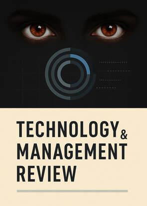

Technology & Management Review (TMR) is an international, peer-reviewed, open-access scholarly journal committed to publishing high-quality research in technology, management, innovation, business, engineering, and interdisciplinary studies.

Technology & Management Review (TMR) is an international,
peer-reviewed, open-access scholarly journal dedicated to advancing
knowledge in technology, management, innovation, business,
engineering, information systems, entrepreneurship, sustainability,
artificial intelligence, digital transformation, and related
interdisciplinary fields.
The journal provides an international platform for researchers,
academics, professionals, industry experts, and policymakers to
publish original research articles, review papers, case studies,
technical notes, and innovative ideas that contribute to theory,
practice, and policy.
Publisher: Upright Publications
Journal: Technology & Management Review (TMR)
Email: tmreview.sg@gmail.com
Website: https://uprightpub.github.io/
Submission: https://uprightpub.github.io/submission.html